PREMIUM
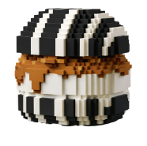
NY #Kurichi
NY#クリチ
NY#クリチ
（レモン＆プラリネ）
アレルギー：小麦、乳、卵、くるみ、アーモンド
詳細 →
口に入れるまでの一瞬、断面の色、チーズのとろけ。
ショート動画でしか伝わらない「#クリチ」をどうぞ。
✨ 新発見！#クリチ (アイスクリームチーズバーガー)の楽しみ方 ✨
外はカリッ＆中はとろ〜り溶けかけ♡
オーブントースターでたったの1分半＋余熱1分で完成！
The Sandbox 上に広がる「KURICHI LAND」。
ニューヨークをモチーフにしたボクセル世界で、昼と夜でまったく違う表情のクリチを体験できます。
かわいくて、ちょっと都会で、小さな大冒険。

プレミアム / 米粉ソイチ / 定番 の3ライン、全14種。
見た目・食感・物語のすべてにこだわった、VSWでしか出会えないクリームチーズバーガー。

アレルギー：小麦、乳、卵、くるみ、アーモンド
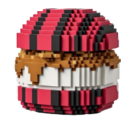
アレルギー：小麦、乳、卵、くるみ、アーモンド、オレンジ
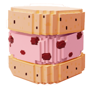
アレルギー：乳、卵
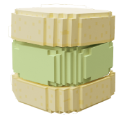
アレルギー：乳、卵
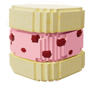
アレルギー：乳、卵
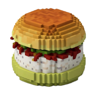
アレルギー：小麦、乳、卵
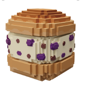
アレルギー：小麦、乳、卵
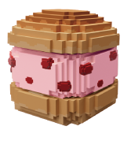
アレルギー：小麦、乳、卵
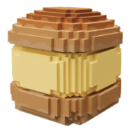
アレルギー：小麦、乳、卵
アレルギー：小麦、乳、卵
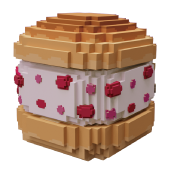
アレルギー：小麦、乳、卵、くるみ
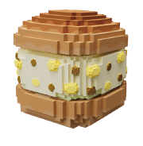
アレルギー：小麦、乳、卵
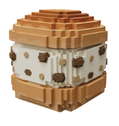
アレルギー：小麦、乳、卵、くるみ
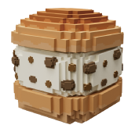
アレルギー：小麦、乳、卵
"パンでもアイスでもない！" 新感覚スイーツバーガー！
特製バンズに濃厚なクリームチーズをサンド。
冷凍のままでも、とろけさせても、美味しい。
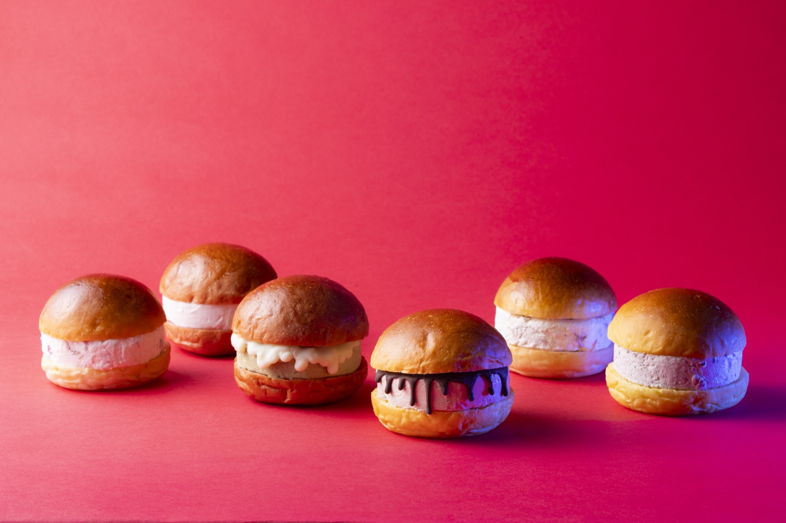
#クリチのマスコット「ハリチくん」を、
52ピースの紙パーツで組み立てるペーパーアート。
shi-gu-mi＋（株式会社エーゾーン）公式コラボ。

接着剤いらずで組める、52ピースの紙パズル。顔パーツを交換すると、街ごとに違うハリチくんが誕生します。
VSW株式会社は、NY発・大阪生まれ。ニューヨークで出会ったクリームチーズの感動を、大阪・池田で再構築して生まれた「クリームチーズバーガー = #クリチ」を、食の物語として広げているブランドです。 リアル店舗、催事、自動販売機、そしてメタバース — 人が集まる場所すべてに、色鮮やかなクリチをお届けします。
食べることは、文化をつくること。 私たちは一つひとつのバーガーに、素材の物語と作り手の遊び心を詰め込み、 「食べる前からワクワクする体験」をデザインしています。
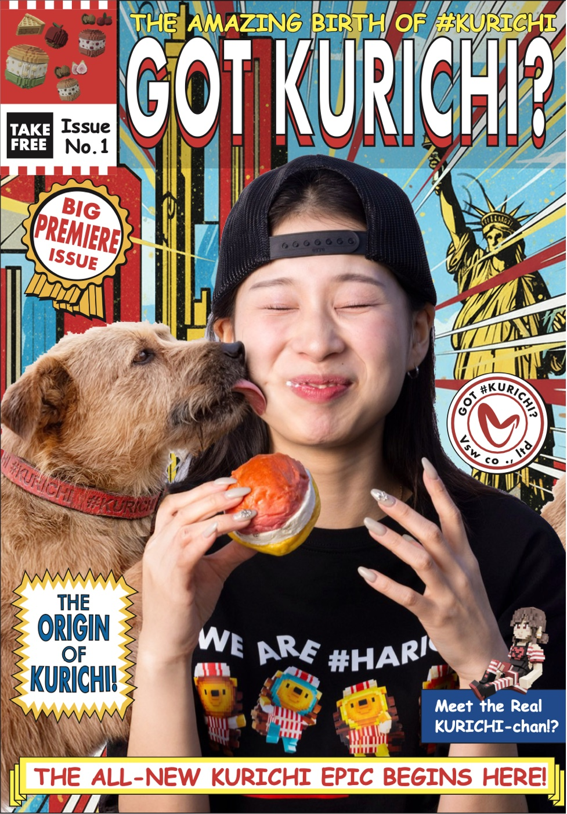
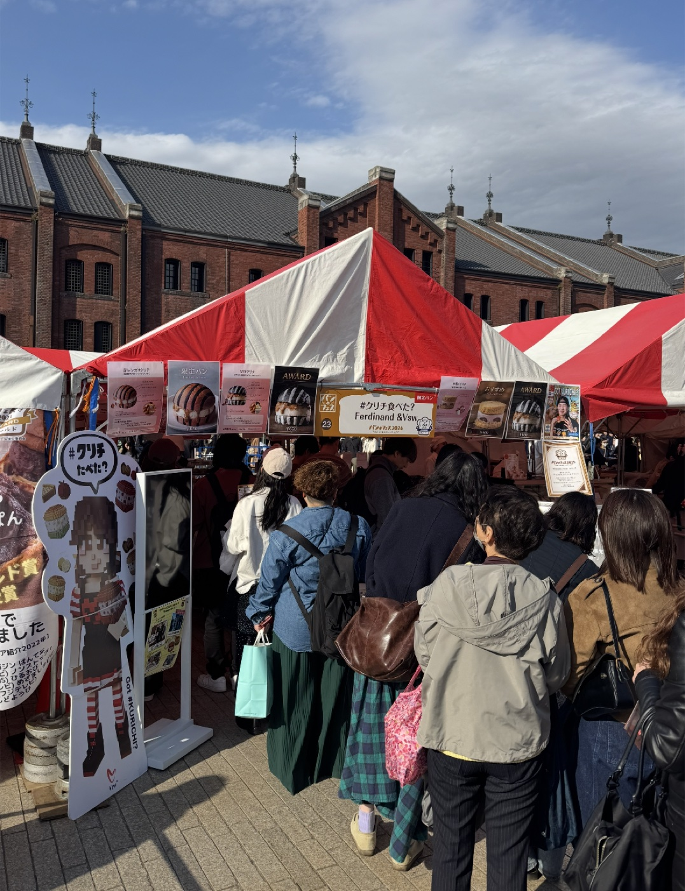
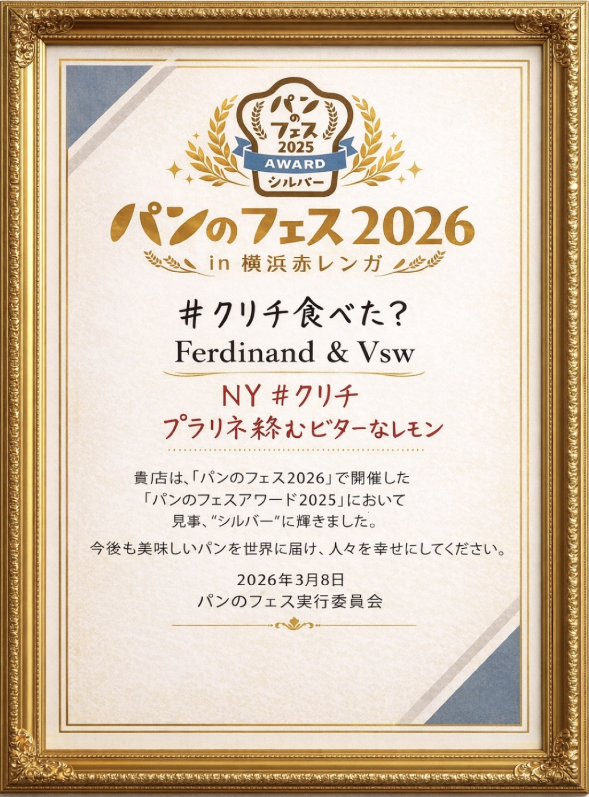
#KURICHI FACTORY & SHOP
※各店舗により、販売フレーバー・販売形態・在庫状況が異なります。
最新の取り扱い状況は、各店舗へ直接ご確認ください。
〒563-0023
大阪府池田市井口堂１丁目１２−２
〒562-0043
大阪府箕面市桜井2-1-18
〒562-0004
大阪府箕面市牧落３丁目７−１８
〒224-0003
神奈川県横浜市都筑区中川中央１丁目２−９
ベイヒルズセンター北駅前 2F
〒359-0044
埼玉県所沢市松葉町１６−１４
〒410006
湖南省长沙市岳麓区凯德壹中心 LG-37号
〒410000
湖南省 长沙市 湘江新区 金山桥街道
永旺梦乐城 F1（1階）
〒200120
上海市浦东新区
金桥太茂商业广场 1层120A
24時間営業の仮想店舗。限定イベントと特別フレーバーを展開中。
新メニュー情報・催事出店・メタバースイベントを、いちばん早くお届け。
メールアドレスを登録して、クリチの次のひと口をお見逃しなく。
（プラリネ絡むビターなレモン）
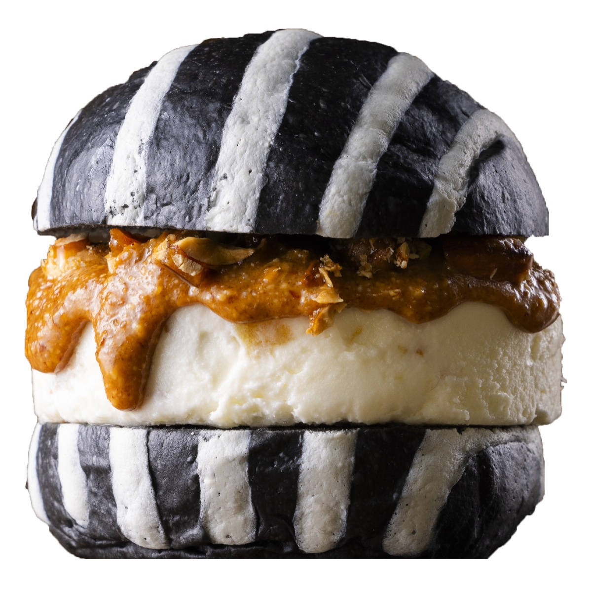
※プラリネ＝ナッツとキャラメルをペースト状にしたもの。香ばしさ・食感・コクを加える #クリチ の重要要素。
ビターなレモンの香り
ナッツの香ばしさとコク
甘さ控えめで大人向け
（祝祭のオレンジプラリネ）
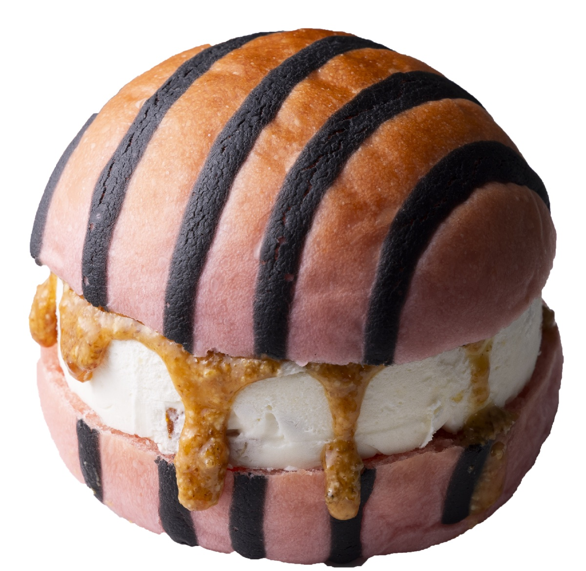
※プラリネ＝ナッツとキャラメルをペースト状にしたもの。香ばしさ・食感・コクを加える #クリチ の重要要素。
柑橘の明るい酸味
ナッツのコクとのコントラスト
見た目と味のインパクト重視
（紅茶香る大粒いちご）
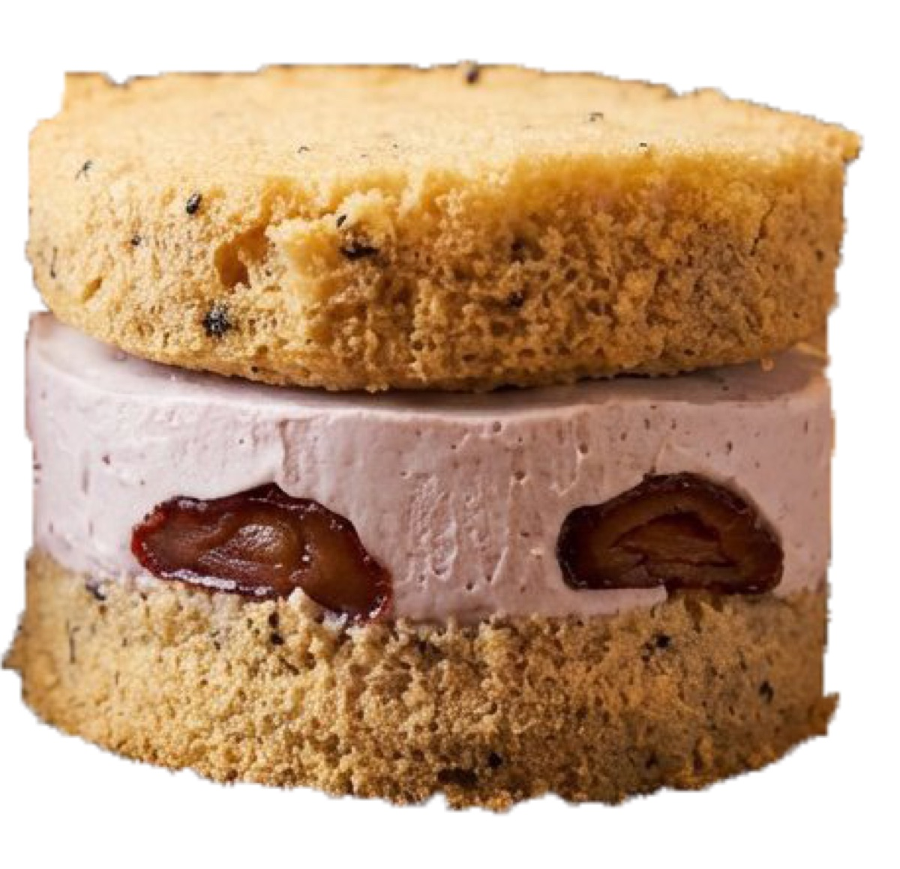
※ソイチ＝クリームチーズ×豆乳クリームをベースにした新シリーズ。軽さ・植物性・次世代スイーツ枠。
小麦不使用
乳製品控えめ
やさしい甘さ・軽い口当たり